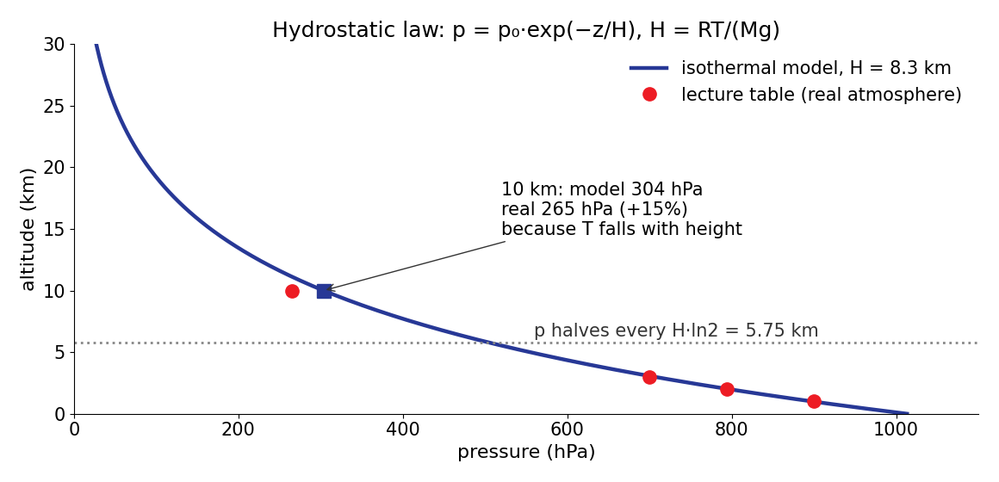
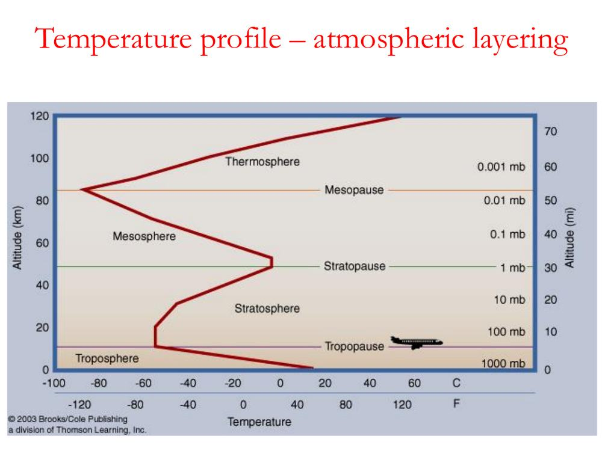
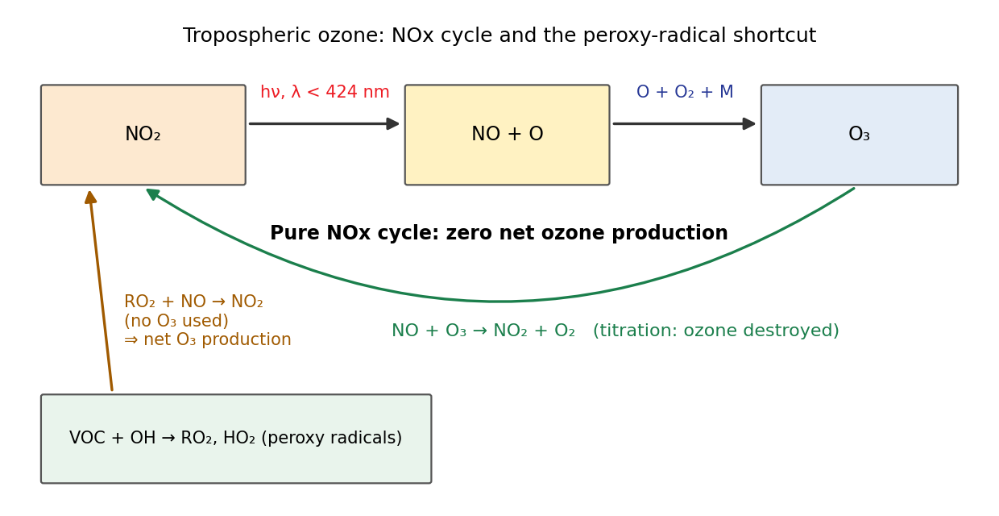
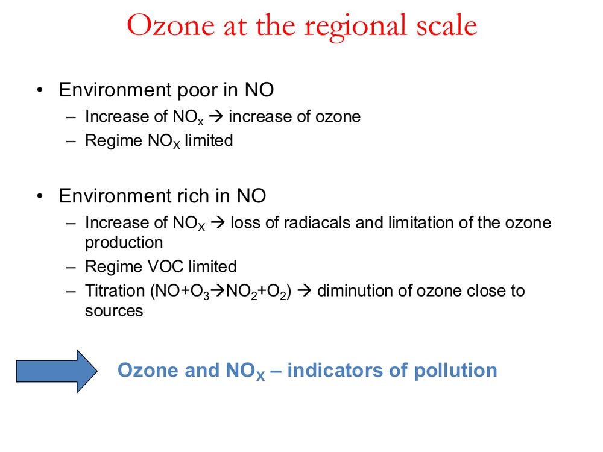

Atmosphere and ozone chemistry
Part B · lecture master slides 5–52
Hydrostatic law: p = p₀·e^(−z/H)
dp/dz = −ρ g , ρ = pM/(RT) ⇒ p = p₀ exp(−z/H)
H = RT/(Mg) ≈ 8.3 km (T = 284 K) ; half pressure every H·ln 2 = 5.75 km
- Real pressures: 1013 → 900 → 794 → 700 hPa at 0, 1, 2, 3 km
- Pressure carries altitude information (line widths, O₂ A-band)
Isothermal model against the real atmosphere

Python: isothermal model against the lecture table. At 10 km the model is 15% too high because T decreases with height.
Atmospheric layering
| Layer | To (km) | T gradient | Key facts |
|---|---|---|---|
| Troposphere | 8–18 | negative | 80% of mass, weather, fast mixing |
| Stratosphere | 45–55 | positive | O₃ absorbs UV (heating), slow mixing |
| Mesosphere | 80–90 | negative | IR emission by CO₂ |
| Thermosphere | — | positive | UV < 175 nm absorbed by N₂, O₂ |
The boundary layer (a few hundred m to a few km) sits at the bottom of the troposphere.
Lecture page: temperature profile and layers

Lecture slide 9: temperature profile — atmospheric layering.
Units and the concentration budget
| Quantity | Meaning |
|---|---|
| Concentration | molecules/cm³ or g/cm³ |
| Mixing ratio | concentration / total density |
| 1 ppm | 10⁻⁶ (µmol/mol) |
| 1 ppb | 10⁻⁹ (nmol/mol) |
| 1 ppt | 10⁻¹² (pmol/mol) |
- + emissions
- − deposition
- ± chemistry
- ± advection (horizontal)
- ± turbulence (vertical, boundary layer)
Which sink dominates? A worked example
kout = 24 h / 5 h = 4.8 d⁻¹ ; kchem = 1.0 ; kdep = 0.14 ; ktot = 5.94 d⁻¹

Outflow removes 81% of the pollutant; τ = 4.0 h (lecture slide 40, Python check).
Tropospheric ozone: the NOx cycle

NO₂ photolysis (λ < 424 nm) makes O₃; NO destroys it again. Peroxy radicals break the balance.
Ozone regimes near and far from sources
NO-poor air
More NOx → more O₃. NOx-limited regime.
NO-rich air
More NOx → O₃ loss by titration (NO + O₃). VOC-limited regime.
Photon energy
NO₂: λ < 424 nm (2.92 eV). O₂: λ < 240 nm (5.17 eV), stratosphere only.
Lecture page: ozone at the regional scale

Lecture slide 46: ozone and NOx — indicators of pollution.
Stratospheric ozone and the ozone hole
- Good ozone: UV shield; bad ozone: tropospheric pollution
- Halley Bay, 1985: first observation of the Antarctic hole
- Cold (−80 °C) isolated polar vortex at ≈ 25 km
- Polar stratospheric clouds → ClO and (ClO)₂ released
- Catalytic destruction of ozone
Species and lifetimes you must know
| Species | Lifetime | Sources | Map looks like |
|---|---|---|---|
| NO₂ | hours–1 day | fossil-fuel combustion | hotspots |
| SO₂ | short | industry, coal power | regional plumes |
| CO | ≈ 2 months | combustion | mixes across latitude bands |
| CH₄ | ≈ 10 years | wetlands, livestock, energy | almost uniform |
Compare the lifetime with the mixing time: shorter → hotspots, much longer → uniform.
Exam checklist — Part B
1
H = RT/(Mg) ≈ 8.3 km; p = p₀e^(−z/H); halves every ≈ 5.75 km
2
Layers: troposphere (80% of mass), stratosphere (O₃ heating), boundary layer
3
Budget: emissions, deposition, chemistry, advection, turbulence
4
Rates add: k_tot = Σk; dominant sink = largest k
5
NOx cycle, peroxy radicals, NOx- versus VOC-limited, titration
Key points
- Pressure falls exponentially: altitude has a label
- Short lifetime → hotspots; long lifetime → uniform
- Sinks add as rates
- Ozone production needs peroxy radicals
- Stratosphere: O₂ photolysis; troposphere: NO₂ photolysis